Likelihood_of_HHTHTHHHTT <- function(P) {
P*P*(1-P)*P*(1-P)*P*P*P*(1-P)*(1-P)
}28 Competing hypotheses with Bayesian reasoning
\[\newcommand{\Ptest}{\mathbb{P}} \newcommand{\Ntest}{\mathbb{N}} \newcommand{\Sick}{\cal S} \newcommand{\Healthy}{\cal H} \newcommand{\given}{\ |\!\!|\ }\]
We can start working with Bayesian reasoning even before introducing it as a system; the Bayesian rules are simple consequences of counting and comparison by ratios. To illustrate, consider this familiar situation:
You have undergone a medical testing procedure to figure out if you have a particular illness.
For simplicity, we will call this illness “Sick.” The alternative possibility is that you are “Healthy.”
The two possible results of the testing procedure are “Positive” and “Negative.” By convention, a positive test result points toward the subject of the test being sick and a negative tests points toward being healthy.
To avoid being long-winded, we’ll denote a positive test result by \(\Ptest\) and a negative result by \(\Ntest\). Similarly, we will appreviate “Sick” by \(\Sick\) and “Healthy” by \(\Healthy\).
Suppose your result is \(\Ptest\). What is the probability that you are \(\Sick\)?
It’s commonplace to assign too much significance to a test result, reasoning like this: \(\Ptest \implies \Sick\). Experience shows, however, that there can be healthy people who, nevertheless, get a positive test result. This is why we introduced the issue of “probability.” Might you be one of the healthy people with a \(\Ptest\) result?
Even educated people tend to assume that this probability is almost 1, that a \(\Ptest\) means that you are almost certainly \(\Sick\). But for some familiar tests and illnesses, this is far from being the case.
To calculate the probability that you are \(\Sick\) given a \(\Ptest\) result we need some background information. This information will have been collected by the test developers in the course of making sure their test works before it is released for general use. The information describes two situations:
- Among \(\Sick\) patients, how well does the test work. Specifically, what is the probability of a \(\Ptest\) result in the group of \(\Sick\) patients. The test developers might establish this by working with a group of clinics. The clinics refer patients who have been diagnosed with \(\Sick\). The test is administered to each of these referred patients and the test results tallied up. Let’s suppose, for the purposes of illustration, that 90% of the \(\Sick\) patients had a positive result.
Back in Lesson 16 we introduced the word “likelihood” to refer to probability of observed data in a world where a given hypothesis is true. In our case, the observed data is \(\Ptest\). The hypothesis is that each of the patients is \(\Sick\). We will write the probability of a \(\Ptest\) in a world where the patient is \(\Sick\) as \({\cal L}_\Sick (\Ptest)\). The \(\cal L\) is a reminder that the quantity is a likelihood and applies only when the patient is \(\Sick\).
- The test developers need to make sure that, among \(\Healthy\) people, the \(\Ptest\) result is rare. Healthy people should get a \(\Ntest\) result! In other words, \({\cal L}_\Healthy(\Ptest)\) should be low. To estimate \({\cal L}_\Healthy(\Ptest)\), the test developers will work with a completely different group of people than in (1). For instance, they might recruit the neighbors of the people in (1), and send them to a clinic to confirm that they really are \(\Healthy\). So, group (2) will consist only of \(\Healthy\) people. Each is given the test and the results talled. The fraction of the \(\Healthy\) people who test \(\Ptest\) is \({\cal L}_\Healthy(\Ptest)\). Let’s suppose that the developer’s work shows that \({\cal L}_\Healthy(\Ptest) = 0.20\). That is, a \(\Healthy\) person is pretty likely to get a \(\Ntest\) result, but not certain.
These two pieces of information in (1) and (2) are both in the form of likelihoods. But each is relevant only to the given situation. \({\cal L}_\Sick(\Ptest)\) applies only to people who are known to be sick. \({\cal L}_\Healthy(\Ptest)\) is applicable only to healthy people.
One important use for tests such as the one we described is “medical screening.” Screening is applied to members of the general population who display no relevant symptoms and have no particular reason to believe they might be \(\Sick\). Familiar examples of tests used for screening: mammography for breast cancer, PSA for prostate cancer, Pap smears for cervical cancer. Screening also occurs in non-medical settings, for instance drug tests or criminal background checks required by employees for current or prospective workers.
Medical tests are also used in non-screening settings. For example, a person who is feeling flu-like symptoms will often take a COVID test. Similarly, a person going to a wedding might take a COVID test even though she is not feeling any symptoms.
The difference between screening settings and non-screening settings is a matter of degree. The number used to quantify the setting is called the “prevalence,” which is the fraction of people in the test-taking group who are \(\Sick\).
The test developers applied the test to two different groups of people. In the \(\Sick\) group the prevalence is 100%. In the \(\Healthy\) group the prevalence is 0.
Now we come to you and your \(\Ptest\) result. You are a member of a group. Which group that is depends on your circumstances, for instance your age, sex, and nationality. Other risk factors may also come into the definition of your group, for example, fitness or whether you drink alcohol regularly. Whatever risk factors define your group, the number you need to know is the prevalence of \(\Sick\) in your group.
It is usually impractical to measure prevalence precisely in a large, general group of people. Doing so requires a random sample of a large size and then subjecting each person in the sample to a diagnostic procedure. In practice, the stated prevalence of \(\Sick\) in a group will only be an estimate based on how frequently people are diagnosed with \(\Sick\). For instance, by looking retrospectively at insurance and medical records, one can find the risk of developing \(\Sick\) over a 5-year period. We will leave such important issues to public health specialists, since our goal here is to show you the logic of hypothetical thinking.
Suppose, for the purposes at hand, that the prevalence of \(\Sick\) in your group is 2%. When you walked into the medical clinic your risk of \(\Sick\) was therefore 2%. What is your risk once you have been handed your \(\Ptest\) test result?
To help you see how the calculation is organized, let’s look at your group graphically. Imagine they are assembled in a sports field and a picture has been taken from an overhead drone, as in Figure 28.1(a). The \(\Sick\) people are drawn as triangles and the \(\Healthy\) as a circle.
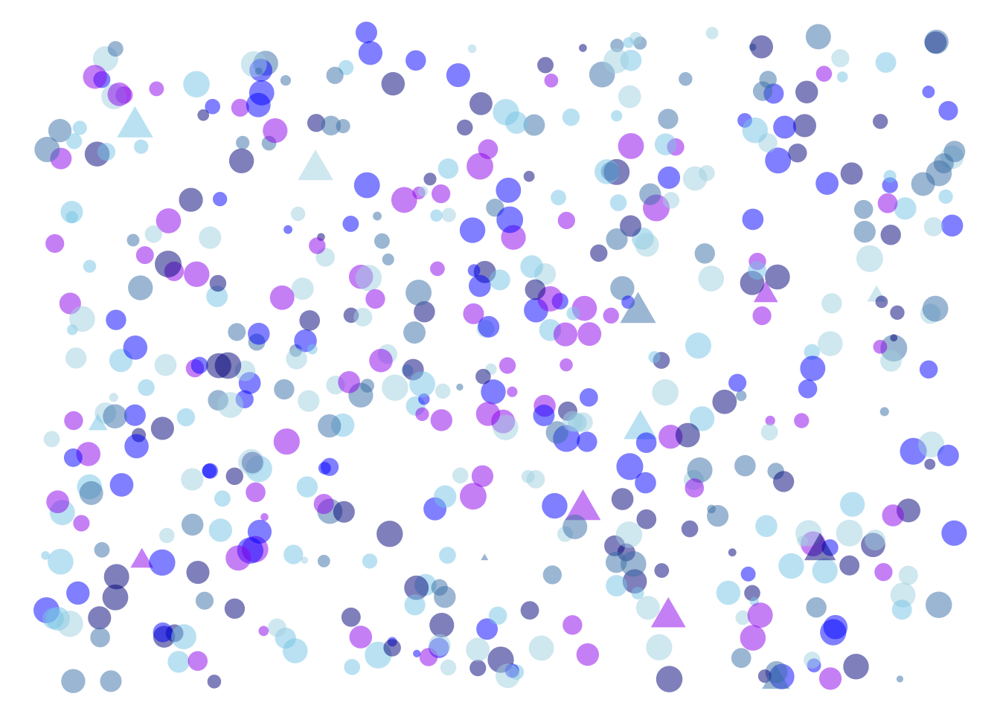
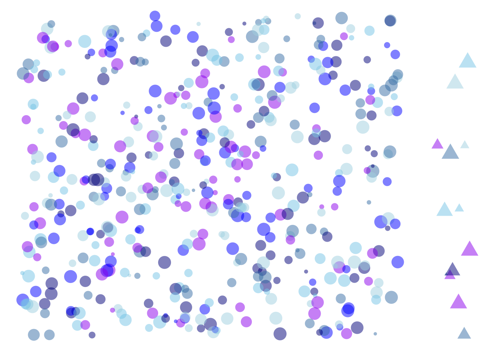
Naturally, the member of your group differ from one another, shown by size and color in Figure 28.1(a). Since the prevalence in your group is 1 percent, about 1 in 100 of the people are \(\Sick\), even though they don’t know it yet. In Figure 28.1(b), we have moved the \(\Sick\) people off to the right, just for display purposes.
Imagine that everyone in your group takes the medical test. Most will test \(\Ntest\), since the prevalence is small. As for the few who test \(\Ptest\), we will change their color to red.
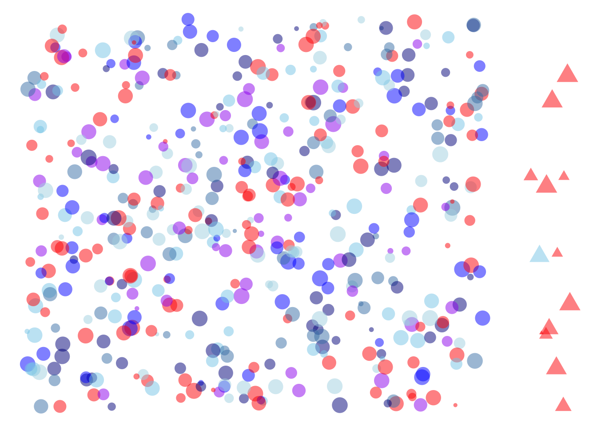
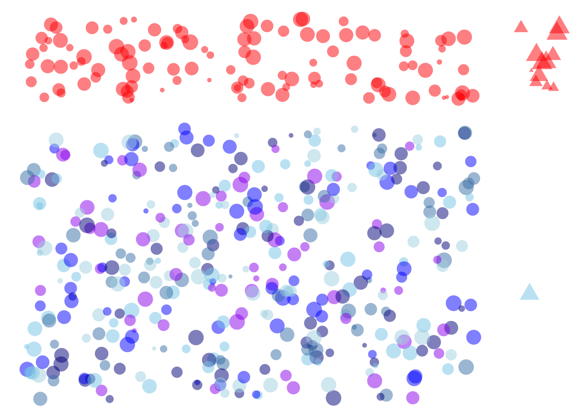
Now we can answer the original question:
Suppose your result is \(\Ptest\). What is the probability that you are \(\Sick\)?
We don’t know which dot in Figure 28.2 is you, but we do know that you are one of the red ones. The probability you seek is the fraction of red people who are at the \(\Sick\) end of the field. We can answer the question by counting the dots. By eye, the \(\Sick\) are about 10% of the \(\Ptest\).
We could also answer the probability question by simple wrangling. The (simulated) data behind Figure 28.2 are called Your_group. The wrangling:
Your_group |>
filter(test == "P") |>
summarize(mean(sick=="S"))| mean(sick == "S") |
|---|
| 0.0967742 |
Arithmetic calculation
We demonstrated using a data simulation how to compute the probability that you are \(\Sick\) given your \(\Ptest\).
In constructing the simulation, we used the relevant information:
- \({\cal L}_\Sick(\Ptest) = 0.90\)
- \({\cal L}_\Healthy(\Ptest) = 0.20\)
- Prevalence in your group is 0.02.
We don’t actually need the simulation. We can carry out the calculation of the probability that a \(\Ptest\) person is \(\Sick\) with arithmetic.
- The proportion of people in your group who are \(\Sick\) is the prevalence: \(p(\Sick) = 0.02\).
- Of these \(\Sick\) people, the proportion who will test positive is \({\cal L}_\Sick(\Ptest)\).
- So, the proportion of the whole group who are both \(\Sick\) and \(\Ptest\) is \({\cal L}_\Sick(\Ptest) p(\Sick) = 0.9 \times 0.02 = 0.018\). This corresponds to the red dots in the upper right quadrant of Figure 28.2(b).
- The proportion of people in your group who are \(\Healthy\) is 1 minus the prevalence: \(p(\Healthy) = 1 - 0.02 = 0.98\)
- Of these \(\Healthy\) people, the proportion who will test positive is \({\cal L}_\Healthy(\Ptest) = 0.9 \times 0.01 = 0.009\).
- So, the proportion of the whole group who are both \(\Healthy\) and \(\Ptest\) is \({\cal L}_\Healthy(\Ptest) p(\Healthy) = 0.20 \times 0.98 = 0.196\).
- Putting these two proportions together, we get \(0.196 + 0.018 = 0.216\) have a \(\Ptest\).
We want the proportion of sick \(\Ptest\) people out of all the \(\Ptest\) people, or:
\[p(\Sick\given\Ptest) = \frac{0.018}{0.198 + 0.018} = 0.084\ .\]
Even though you tested \(\Ptest\), there is less than a 10% chance that you are \(\Sick\)!
Bayesian thinking
We used the specific, concrete situation of medical testing to illustrate Bayesian thinking, the result of which was the probability that you are \(\Sick\) given your \(\Ptest\) result. In this section we will describe Bayesian thinking in more general terms.
Bayesian thinking is analogous to deductive reasoning in geometry. The purpose of both is to generate new statements (e.g. “the two lines are not parallel”) from existing statements (e.g. “the two lines cross at a point”) that are posited to be true. In geometry, statements are about lengths, angles, areas, and so on. In Bayesian thinking, the statements are about a set of hypotheses, observations, and likelihoods.
Bayesian thinking involves two or more hypotheses that you want to choose between based on observations. In the medical testing example, the two hypotheses were \(\Sick\) and \(\Healthy\).
This claim that \(\Sick\) and \(\Healthy\) are hypotheses may surprise you. Aren’t \(\Sick\) and \(\Healthy\) two different objective states of being, one of which is true and the other one isn’t? In the Bayesian system, however, such states are always uncertain. We quantify the uncertainty by relative probabilities.
For instance, a possible Bayesian statement about \(\Sick\) and \(\Healthy\) goes like this, “In the relevant instance, \(\Sick\) and \(\Healthy\) have relative probabilities of 7 and 5 respectively.” (Many people prefer to use “belief” instead of “statement.”)
The book-keeping for Bayesian statements is easiest when there are only two hypotheses in contention. In this section, we will stick to that situation. Since there are only two hypotheses, any statement about them can be translated from relative probabilities into “odds.” For instance, “relative probabilities of 7 and 5 respectively” is equivalent to “the odds of \(\Sick\) are 7 to 5, that is 1.4. (The odds of the other hypothesis, \(\Healthy\) in the example, are just the reciprocal of the odds of the first hypothesis.)
As mentioned previously, Bayesian thinking is a way of generating new statements out of old ones that are posited to be true. The words “new” and “old” suggest that time is in play, and that’s a good way to think about things. Conventionally the words prior and posterior are used to indicate “old” or “new.” From prior statements we will deduce posterior statements.
Observations are the thing that drive the derivation from prior statements to posterior statements. For instance, in the medical testing example, a good prior statement about \(\Sick\) for you relates to the prevalence of \(\Sick\) in your relevant reference group. We stipulated before that this is 0.02. In terms of odds, this amounts to saying that the odds of \(\Sick\) on the day before the test were 2/98 = 0.02041. Or, better, your prior for \(\Sick\) is 0.02041.
Now new information comes along: your test result: \(\Ptest\). We will use this to transform your prior into a posterior informed by the test result. Like this:
\[posterior\ \text{for } \Sick\ \longleftarrow_\Ptest\ prior\ \text{for }\Sick\] Keep in mind that both the prior and posterior are in the form of “odds of \(\Sick\).
How do we accomplish the transformation? This is where the likelihoods come in. There is one \(\Ptest\) likelihood for each of the two hypotheses. We will write them as a fraction:
\[\text{Likelihood ratio}(\Ptest) \equiv\frac{{\cal L}_\Sick(\Ptest)}{{\cal L}_\Healthy(\Ptest)}\] Note that the likelihood for the \(\Sick\) hypothesis is on the top and \(\Healthy\) is on the bottom. This is because we are framing our prior and posterior in terms of the odds of \(\Sick\). Also, both likelihoods involve the same observation, in this case the \(\Ptest\) result from your test.
Here is the formula for the transformation:
\[posterior\ \text{for } \Sick = \text{Likelihood ratio(}\Ptest\text{)} \times \ prior\ \text{for }\Sick\]
Example calculation
We assumed your reference group has a prevalence of 2%. Translating this probability into the form of odds gives:
\[prior\ \text{for}\ \Sick = \frac{2}{98} = 0.02041\]
The relevant likelihoods were established, as described in the previous section, by the test developer’s study of \(\Sick\) patients and \(\Healthy\) individuals.
\[\text{Likelihood ratio}(\Ptest) \equiv\frac{{\cal L}_\Sick(\Ptest)}{{\cal L}_\Healthy(\Ptest)} = \frac{0.90}{0.20} = 4.5\] Consequently, the posterior (driven by the observation \(\Ptest\)) is
\[posterior\ \text{for } \Sick = 4.5 \times 0.02041 = 0.09184\ .\]
This posterior is stated as odds. In terms of probability, it corresponds to \(\frac{0.09184}{1 + 0.0984} = 0.084\), exactly what we got when we counted red circles and red triangles in Figure 28.2!
Bayes with multiple hypotheses
The previous section showed the transformation from prior to posterior when there are only two hypotheses. But Bayesian thinking applies to situations with any number of hypotheses.
Suppose we have \(N\) hypotheses, which we will denote \({\cal H}_1, {\cal H}_2, \ldots, {\cal H}_N\).
Since there are multiple hypotheses, it’s not clear how odds will apply. So instead of stating priors and posteriors as odds, we will write them as relative probabilities. We’ll write the prior for each hypothesis as \(prior({\cal H}_i)\) and the posterior as \(posterior({\cal H}_i)\).
Now an observation is made. Let’s call it \(\mathbb{X}\). This observation will drive the transformation of our priors into our posteriors. As before, the transformation involves the likelihood of \(\mathbb{X}\) under the relative hypotheses. That is, \({\cal L}_{\cal H_i}(\mathbb{X})\). The calculation is simply
\[posterior({\cal H_i}) = {\cal L}_{\cal H_i}(\mathbb{X}) \times\ prior({\cal H_i}) \ \text{in relative probability form}\]
If you want to convert the posterior from a relative probability into an ordinary probability (between 0 and 1), you need to collect up the posteriors for all of the hypotheses. The notation \(p(\cal H_i\given \mathbb X)\) is conventional, where the posterior nature of the probability is indicated by the \(\given \mathbb X)\). Here’s the formula:
\[p(\cal H_i\given \mathbb X) = \frac{posterior(\cal H_i)}{posterior(\cal H_1) + posterior(\cal H_2) + \cdots + posterior(\cal H_N)}\] ::: {.callout-note} ## Example: Car safety
Maybe move the example using the exponential distribution from the Likelihood Lesson to here.
:::
Accumulating evidence
THE CYCLE OF ACCUMULATION
Note: There are specialized methods of Bayesian statistics and whole courses on the topic. An excellent online course is Statistical Rethinking.
Exercises
Draft exercises
::: {.callout-note collapse} ## Exercise 28.1 bayes-new-driver
DRAFT
A new driver has just gotten her license and wants to arrange car insurance. In order to set the premium (price of insurance), the insurance company needs an estimate of the accident risk.
At the start, it reasonable to assume a relatively high risk (per mile). USE THIS TO FORM A PRIOR, then multiply it by the likelihood of not being in an accident for the miles driven in the first year. :::
Note
Apply the formula for the posterior probability for many formulas for a situation where \(N=2\): just two hypotheses. Derive the posterior odds formula from the posterior probability formula.
Hint: When there are just two hypotheses in play, \({\cal H_1}\) and \({\cal H_2}\), then, with priors and posteriors expressed as probabilities,
\[prior({\cal H_2}) = 1 - prior( \cal H_1)\] and
\[posterior({\cal H_2}) = 1 - posterior( \cal H_1)\]
Exercise 28.2 DRAFT-bayes-odds-form
DRAFT OF EXERCISE Bayes theorem in odds form:
Odds of alternative hypothesis after seeing data = Odds of alternative before seeing data TIME p(Data | Alt)/p(Data/Null)
The quantity p(Data | Alt)/p(Data/Null) is called the Bayes factor.
Calculate the Bayes factor for a given sensitivity and specificity. Use this to calculate the posterior odds and translate these back into the posterior probability.
Exercise 28.3 Q33-4
One aspect of conditional probability that takes some getting used to is that two probabilities that are written in much the same way—p(A | B) and p(B | A)—have different meanings and can be very different numerically.
To illustrate, consider spinning a coin on a desktop and observing whether it lands heads or tails. For a coin flip it is widely accepted that the probability of heads equals the probability of tails: each is 1/2. But for spinning coins, the bevel or any irregularity on the edge of the coin influences the result, so the probability of heads is not necessarily 1/2. If not, how do we estimate the probability? Spin the coin many times and observe what comes up.
For instance, suppose the observation with 10 spins is HHTHTHHHTT. From this, we would like to estimate the probability that any additional spin will turn up heads. Written in terms of conditional probability, what we want to know is p(H | observed HHTHTHHHTT). Let’s call this probability \(\cal P\).
It’s reasonable enough to calculate \(\cal P\) by counting the number of times H came up in the 10-spin sequence HHTHTHHHTT. That comes to 6/10. Easy enough, but how precise is that estimate?
Consider the problem now from a Bayesian perspective. We will need two probabilities for this. The first is our “prior,” that is, our beliefs about the relative probabilities of different possible \(\cal P\) before we make any observation. Since we haven’t made any observation, we might reasonably believe that any \(\cal P\) between zero and one is equally likely. Or we might believe, based on our experience with flipping coins, that values of \(\cal P\) near 50% are more likely than others. We can write the prior probability like this: p(\(\cal P\)).
The other probability that we need is the likelihood of the observations, that is p(HHTHTHHHTT | \(\cal P\)). Multiply the likelihood (which is a function of \(\cal P\)) times the prior (which is also a function of \(\cal P\)) to get the posterior: our estimate of the relative probability of different values of \(\cal P\) given the observations HHTHTHHHTT.
But how do we find the likelihood function? A first step is to assert that the result from one spin is independent of any other spin. This allows us to decompose the likelihood into a product of simpler likelihoods:
p(HHTHTHHHTT | \(\cal P\)) =
p(H | \(\cal P\)) \(\cdot\) p(H | \(\cal P\)) \(\cdot\) p(T | \(\cal P\)) \(\cdot\) p(H | \(\cal P\)) \(\cdot\) p(T | \(\cal P\)) \(\cdot\) p(H | \(\cal P\)) \(\cdot\) p(H | \(\cal P\)) \(\cdot\) p(H | \(\cal P\)) \(\cdot\) p(T | \(\cal P\)) \(\cdot\) p(T | \(\cal P\))
We still have to figure out what are the functions p(H | \(\cal P\)) and p(T | \(\cal P\)). To see what these likelihoods are, let’s translate them into everyday English:
- p(H | \(\cal P\)): Suppose the probability of heads is \(\cal P\). What is the probability of heads?
The answer to the above question may be self-evident. p(H | \(\cal P\)) = \(\cal P\). Similarly, …
- p(T | \(\cal P\)): Suppose the probability of heads is \(\cal P\). What is the probability of tails.
The answer … p(T | \(\cal P\)) = 1 - \(\cal P\).
Now we are in a position to construct the likelihood function p(HHTHTHHHTT | \(\cal P\)):
\[\underbrace{\cal P}_\text{H} \underbrace{\cal P}_\text{H} \underbrace{(1-\cal P)}_\text{T} \underbrace{\cal P}_\text{H} \underbrace{(1-\cal P)}_\text{T} \underbrace{\cal P}_\text{H} \underbrace{\cal P}_\text{H} \underbrace{\cal P}_\text{H} \underbrace{(1-\cal P)}_\text{T} \underbrace{(1-\cal P)}_\text{T}\]
We can implement this in R:
We also need to implement the prior. One of the priors we discussed is simple:
prior_uniform <- function(P) 1This uniform prior produces the posterior Likelihood_of_HHTHTHHHTT(P)*prior_uniform(P). Here’s a graph of the posterior:
library(mosaicCalc)
slice_plot(Likelihood_of_HHTHTHHHTT(P)*prior_uniform(P) ~ P,
bounds(P=0:1)) + labs(title="With uniform prior", y="Posterior probability")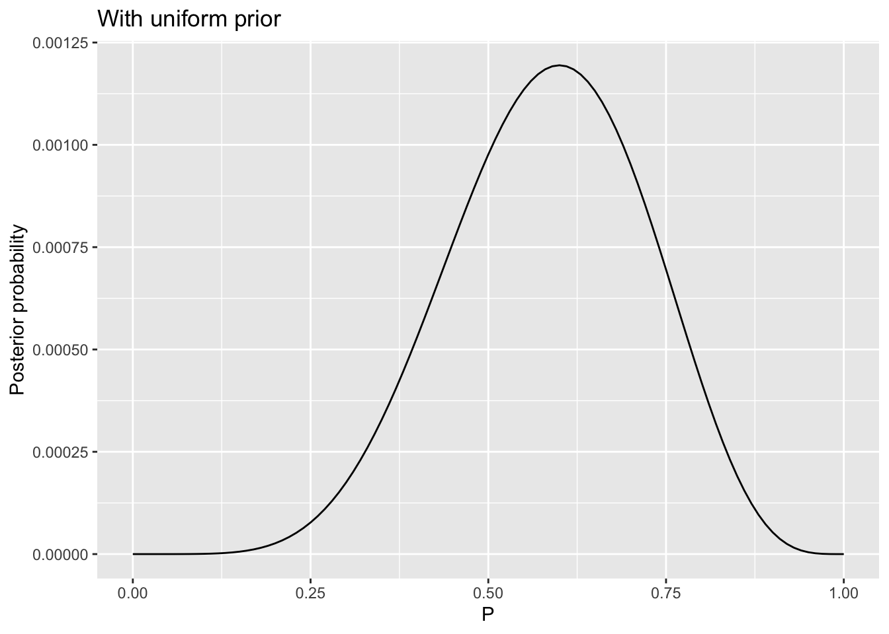
QUESTION: By eye, find a central 95% interval on the posterior probability. That is, mark left and right points on the horizontal axis such that 2.5% of the area under the curve is to the left of the left point, and 2.5% of the area under the curve is to the right of right point. (Useful fact about the graph: each small rectangle is about 3.6% of the overall area under the curve.)
The uniform prior is very simple to program. For priors on \(\cal P\) that are not uniform, many statisticians use the “beta” distribution, which has two shape parameters. Here’s a graph of one member of the beta family:
slice_plot(dbeta(P, shape1 = 4, shape2 = 4) ~ P, bounds(P=0:1))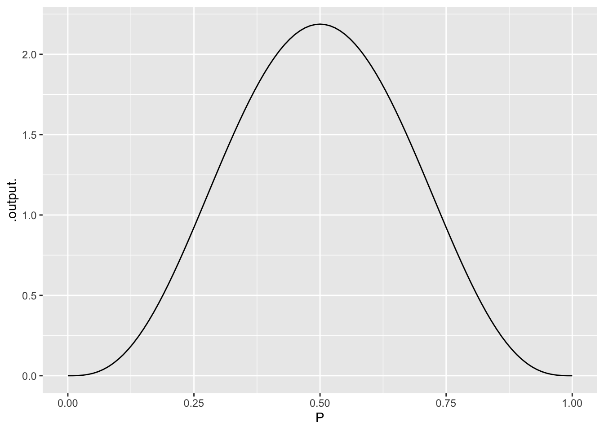
Using the beta as a non-uniform prior, graph the posterior Likelihood_of_HHTHTHHHTT(P)*dbeta(P, shape1=4, shape2=4). Is this posterior narrower or broader than the one for the uniform prior?
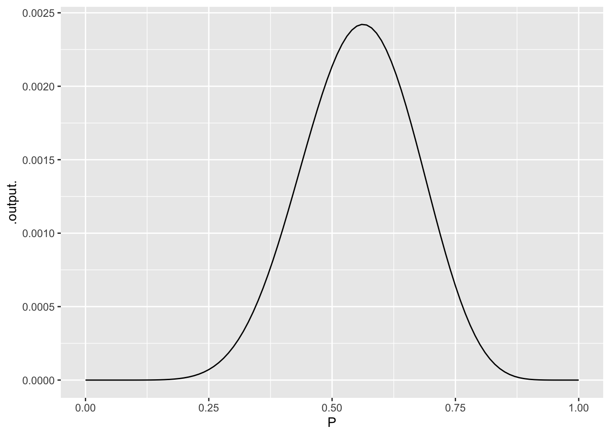
Exercise 28.4 DRAFT-Q34-1
SOMETHING IS NOT WORKING
You are in the process of constructing a classifier for a medical condition. You have collected training data from people in two groups: group D) those who definitely have the disease, and group H) those who do not have the condition.
There are altother 100 people in your training data. The graph shows the scores calculated for each person in the two groups.
Explain in which group a “false positive” might possibly occur.
Apply a threshold of 0.6. How many false positives and how many false negatives are there?
Suppose that the loss is 2 units for a false-positive and 15 units for a false-negative. What is the overall loss among the 100 subjects shown in the graph?
What’s the highest threshold value that would entirely eliminate the false negatives?
Short projects
project 28.5 Q34-2
The LSTbook::Birdkeepers data frame records 147 people, some of whom have lung cancer (LC) and some not. The graph shows a model of LC based on the average rate of smoking in cigarettes per day (CD).
Birdkeepers <- Birdkeepers |> mutate(cancer = zero_one(LC, one="LungCancer"))
mod <- Birdkeepers |> model_train(cancer ~ splines::ns(CD,2), family = "binomial")
Birdkeepers |> point_plot(cancer ~ splines::ns(CD, 2), annot = "model") |>
gf_labs(y="Prob. of cancer", x="Cigarettes per day")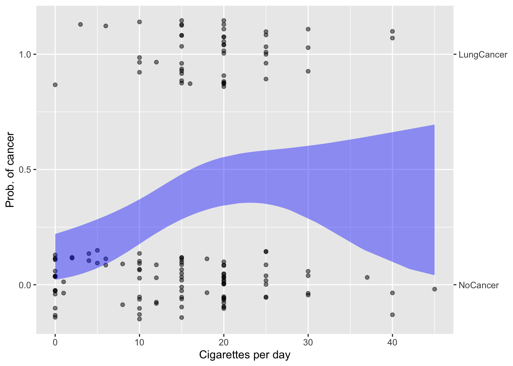
Consider a threshold of 20 cigarettes per day. Estimating by eye, what’s the false-positive rate? What’s the false-negative rate? (Hint: Count dots!)
Could this give a classifier of any practical use? Explain how your answer is related to the false-positive and false-negative rates that you found.
project 28.6 Q35-2
Being a statistician, I am often approached by friends or acquaintances who have recently gotten a “positive” result on a medical screening test, for example cholesterol testing or prostate-specific antigen (PSA). They want to know how likely it is that they have the condition—heart disease or prostate cancer—being screened for. Before I can answer, I have to ask them an important question: How did you come to have the test? I want to know if the test was done as part of a general screening or if the test was done because of some relevant symptoms.
To illustrate why the matters of symptoms is important, consider a real-world test for schizophrenia.
In 1981, President Reagan was among four people shot by John Hinkley, Jr. as they were leaving a speaking engagement at a D.C. hotel. At trial, Hinckley’s lawyer presented an “insanity” defense, there being a longstanding legal principle that only people in control of their actions can be convicted of a crime.
As part of the evidence, Hinkley’s defense team sought to present a CAT scan showing atrophy in Hinkley’s brain. About 30% of schizophrenics had such atrophy, compared to only 2% of the non-schizophrenic population. Both of these are likelihoods, that is, a probability of what’s observed given the state of the subject.
A. Based on the above, do you think the CAT scan would be strong evidence of schizophrenia?
A proper calculation of the probability that a person with atrophy is schizophrenic depends on the prevalence of schizophrenia. This was estimated at about 1.5% of the US population.
Calculating the probability of the subject’s state given the observation of atrophy involves comparing two quantities, both of which have the form of a likelihood times a prevalence.
- Evidence in favor of schizophrenia: \[\underbrace{30\%}_\text{likelihood} \times \underbrace{1.5\%}_\text{prevalence} = 0.45\%\]
- Evidence against schizophrenia: \[\underbrace{2\%}_\text{likelihood} \times \underbrace{98.5\%}_\text{prevalence} = 1.97\%\] The probability of schizophrenia given atrophy compares the evidence for schizophrenia to the total amount of evidence: \[\frac{0.45\%}{1.97\% + 0.45\%} = 18.6\%\ .\] Based just on the result of the test for atrophy, Hinkley was not very likely to be a schizophrenic.
This is where the “How did you come to have the test?” question comes in.
For a person without symptoms, the 18.6% calculation is on target. But Hinkley had very definite symptoms: he had attempted an assassination. (Also, Hinkley’s motivation for the attempt was to impress actress Jody Foster, to “win your heart and live out the rest of my life with you.)
The prevalence of of schizophrenia among prisoners convicted of fatal violence is estimated at about 10 times that of the general population. Presumably, it is even higher among those prisoners who have other symptoms of schizophrenia.
B. Repeat the “evidence for” and “against” schizophrenia, but updated for a prevalence of 20% instead of the original 1.5%. Has this substantially change the calculated probability of schizophrenia?
Epilogue: Hinkley was found not guilty by virtue of insanity. He was given convalescent leave from the mental hospital in 2016 and released entirely in 2022.
Note: This question is based on a discussion in the July 1984 “Misapplications Reviews” column of INTERFACES **14(4):48-52.
project 28.7 Q28-303
Screening tests
The reliability of a \(\mathbb{P}\) result differs depending on the prevalence of C. A consequence of this is that medical screening tests are recommended for one group of people but not for another.
For instance, the US Preventative Services Task Force (USPSTF) issues recommendations about a variety of medical screening tests. According to the Centers for Disease Control (CDC) summary:
The USPSTF recommends that women who are 50 to 74 years old and are at average risk for breast cancer get a mammogram every two years. Women who are 40 to 49 years old should talk to their doctor or other health care provider about when to start and how often to get a mammogram.
Recommendations such as this can be baffling. Why recommend mammograms only for people 50 to 74? Why not for older women as well? And how come women 40-49 are only told to “talk to their doctor?”
The CDC summary needs decoding. For instance, the “talk to [your] doctor” recommendation really means, “We don’t think a mammogram is useful to you, but we’re not going to say that straight out because you’ll think we are denying you something. We’ll let your doctor take the heat, although typically if you ask for a mammogram, your doctor will order one for you. If you are a woman younger than 40, a mammogram is even less likely to give a useful result, so unlikely that we won’t even hint you should talk to a doctor.”
The reason mammograms are not recommended for women 40-49 is that the prevalence for breast cancer is much lower in that group of people than in the 50-74 group. The prevalence of breast cancer is even lower in women younger than 40.
So what about women 75+? The prevalence of breast cancer is high in this group, but at that age, non-treatment is likely to be the most sensible option. Cancers can take a long while to develop from the stage identified on a mammogram, and at age 75+ it’s not likely to be the cause of eventual death.
The USPSTF web site goes into some detail about the reasoning for their recommendations. It’s worthwhile reading to see what considerations went into their decision-making process.
Example: Breast cancer and mammography
Let’s look more closely at the details of breast-cancer screening. The reported sensitivity of digital mammography is 85% and the specificity is 90%.1
The National Cancer Institute publishes cancer-risk tables. Figure 28.3 shows the NCI table for breast cancer.
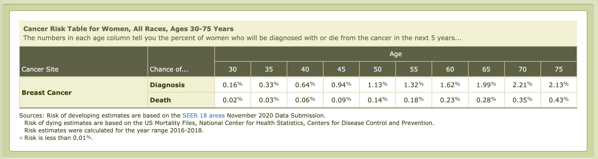
Women 60 to 70 have a risk of about 2%—we will take this as the prevalence. Out of 1000 such women:
- 20 women have breast cancer, of whom 90% will receive a \(\mathbb{P}\) test result. Consequently, 18 women with cancer get a \(\mathbb{P}\) result.
- 980 women do not have breast cancer. Since the test specificity is 85%, the probability of a \(\mathbb{P}\) test result is 15%, so 147 women in this group will get a \(\mathbb{P}\) result.
Altogether, 165 out of the group of 1000 women will have a \(\mathbb{P}\) result, of whom 18 have cancer. Thus, for a woman with a \(\mathbb{P}\) result, the prevalence is 18/165, that is, 11%. Using the same logic, for a woman with a \(\mathbb{N}\) result, the risk of cancer is reduced from 2% to about 0.2%.
The point of the screening test is to identify at low cost those women at higher risk of cancer. For mammography, that higher risk is 11%. This is by no means a definitive result.
Now imagine that a different test for breast cancer is available, perhaps one that is more invasive and expensive and therefore not appropriate for women at low risk of cancer. Imagine that the sensitivity and specificity of this expensive test are also 90% and 85% respectively. Applying this second test to the 165 women who received a \(\mathbb{P}\) result on the first test, about 16 of the women with cancer will get a second \(\mathbb{P}\) result. But there are also about 147 people in the group of 165 who do not have cancer. These have a \(1-0.85\) chance of a \(\mathbb{P}\) positive test. Thus, there will be 22 women who do not have cancer but who nonetheless get a \(\mathbb{P}\) result on the second test. The risk of having cancer for the \(16+22\) women who have gotten a \(\mathbb{P}\) result on both tests is \(16/38 = 42\%\).
EXERCISE: Calculate the cancer risk for those who get a positive result on the first test and a negative result on the second. (About 8%.)
EXERCISE: What happens with a third, even more invasive/expensive test, with the 90/85 sensitivity/specificity. What is the risk for the women who get a positive result on that test. (About 82%.)
project 28.8 Q28-304
DEVELOPING A SCREENING TEST
THIS NEEDS A LOT OF CLEANING UP!!!!
In building a classifier, we have a similar situation. Perhaps we can perform the blood test today, but that gives us only the test result, not the subject’s true condition. We might have to wait years for that condition to reveal itself. Only at that point can we measure the performance of the classifier.
To picture the situation, let’s imagine many people enrolled in the study, some of whom have the condition and some who don’t. On Day 1 of the study, we test everyone and get raw score on a scale from 0 to 40. The results are shown in Figure 28.4. Each glyph is a person. The varying locations are meant to help us later on; for now, just think of them as representing where each person lives in the world. The different shapes of glyph—circle, square, triangle—are meant to remind you that people are different from one another in age, gender, risk-factors, etc.
Each person took a blood test. The raw result from that test is a score from 0 to 40. The distribution of scores is shown in the right panel of the figure. We also show the score in the world-plot; the higher the raw score, the more blue the glyph. On Day 1, it isn’t known who has the condition and who does not.
Warning in geom_jitter(width = 0.2, size = 0.2, point_ink = 0.9): Ignoring
unknown parameters: `point_ink`
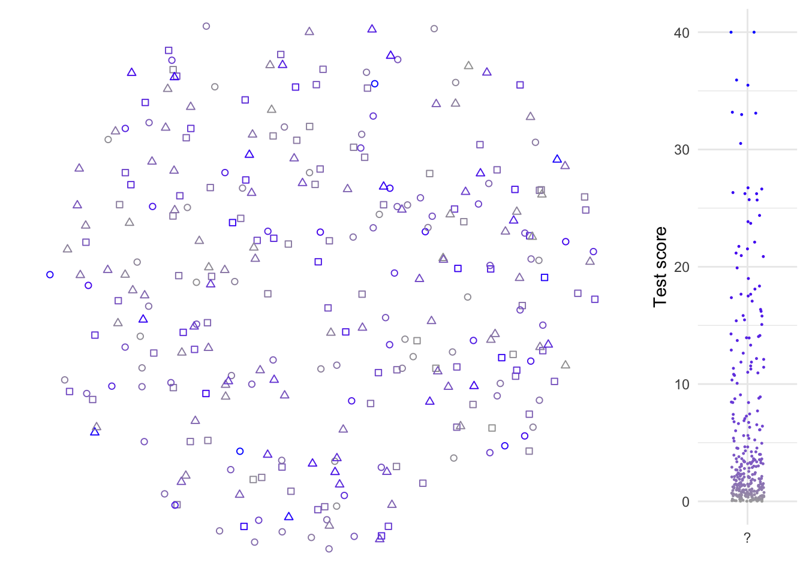
Having recorded the raw test results for each person, we wait. In the pancreatic cancer study, they waited 16 years for the cancer to reveal itself.
… waiting …
After the waiting period, we can add a new column to the original data; whether the person has the condition (C) or doesn’t (H).
Figure 28.5 shows the distribution of raw test scores for the C group and the H group. The scores are those recorded on Day 1, but after waiting to find out the patients’ conditions, we can subdivide them into those who have the condition (C) and those who don’t (H).
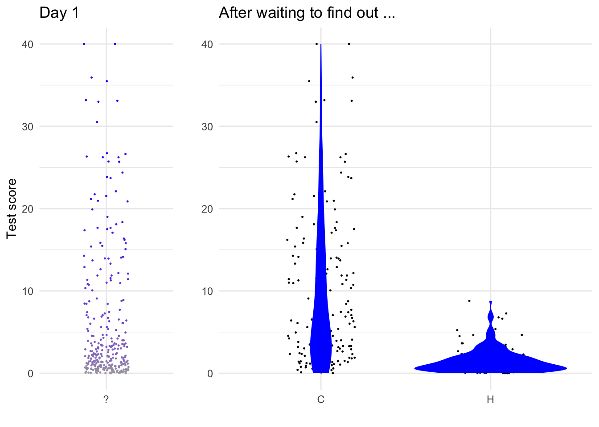
Applying a threshold
To finish the classifier, we need to identify a “threshold score.” Raw scores above this threshold will generate a \({\mathbb{P}}\) test; scores below the threshold generate a \({\mathbb{N}}\) test.
We can make a good guess at an appropriate threshold score from the presentation in the right panel of Figure 28.5. The objective in setting the threshold is to distinguish the C group from the H group. Setting the threshold at a score around 3 does a pretty good job.
It helps to give names to the two test results: \({\mathbb{P}}\) and \({\mathbb{N}}\). Anyone with a score above 3 has result \({\mathbb{P}}\), anyone with a score below 3 has an \({\mathbb{N}}\) result.
Warning in geom_jitter(width = 0.2, size = 0.2, point_ink = 0.9): Ignoring
unknown parameters: `point_ink`
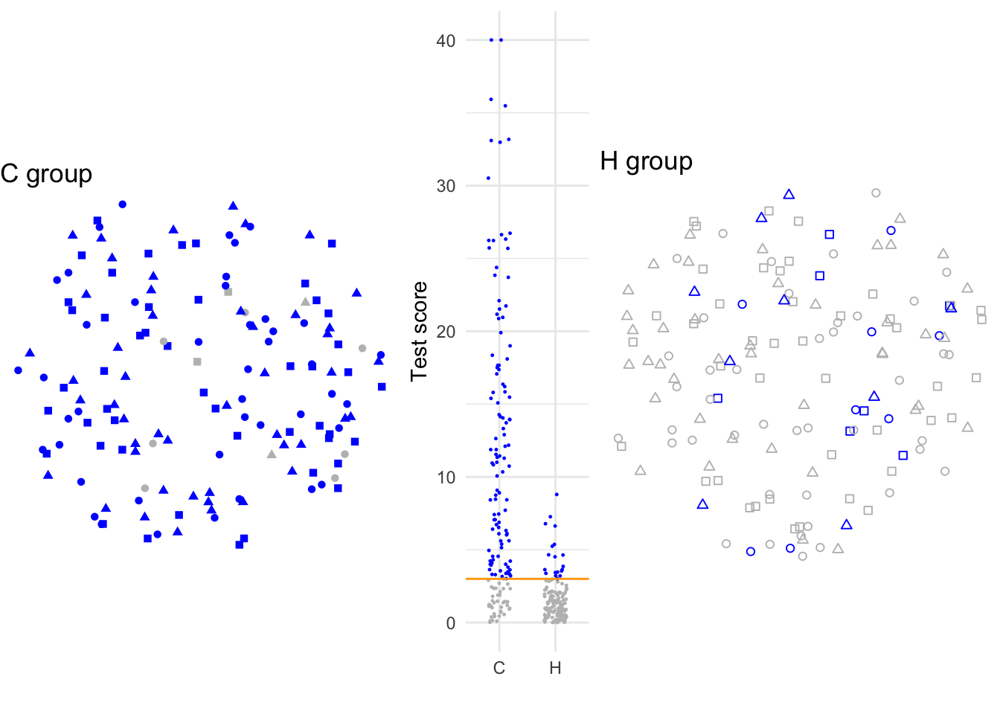
Feature engineering: selling dog food
Naturally, the objective when building a classifier is to avoid errors. One way to avoid errors is by careful “feature engineering.” Here, “features” refers to the inputs to the classifier model. Often, the designer of the classifier has multiple variables (“features”) to work with. (See example.) Choosing a good set of features can be the difference between a successful classifier and one that makes so many mistakes as to be useless.
We will use the name “Bullseye” to refer to a major, national, big-box retailing chain which sells, among many other products, dog food. Sales are largely determined by customer habits; people tend to buy where and what they have previously bought. There are many places to buy dog food, for instance pet supermarkets and grocery stores.
One strategy for increasing sales involves discount coupons. A steep discount provides a consumer incentive to try something new and, maybe, leads to consumers forming new habits. From a sales perspective, however, there is little point in providing discounts to people who already have the habit of buying dog food from the retailer. Instead, it is most efficient to provide the discount only to people who don’t yet have that habit
The Bullseye marketing staff decided to build a classifier to identify pet owners who already shop at Bullseye but do not purchase dog food there. The data available, from Bullseye’s “loyalty” program, consisted of individual customers’ past purchases of the tens of thousands of products sold at Bullseye.
Which of these many products to use as indicators of a customer’s potential to switch to Bullseye’s dog food? This is where feature engineering comes in. Searching through Bullseye’s huge database, the feature engineers identified that customers who buy dog food also buy carpet cleaner. But many people buy carpet cleaner who don’t buy dog food. The engineers searched for purchases might distinguish dog owners from other users of carpet cleaner.
The feature engineers’ conclusion: Send dog-food coupons to people who buy carpet cleaner but do not buy diapers. Admittedly, this will leave out the people who have both dogs and babies: these are false negatives. It will also lead to coupons being sent to petless, spill-prone people whose children, if any, have moved beyond diapers: false-positives.
Threshold, sensitivity and specificity
In Figure 28.6 the threshold between \({\mathbb{P}}\) and \({\mathbb{N}}\) is set at a score of 3. That might have been a good choice, but it pays to take a more careful look.
That graph is hard to read because the scores have a long-tailed distribution; the large majority of scores are below 2 but the scores go up to 40. To make it easier to compare scores between the C and H groups, Figure 28.7 shows the scores on a nonlinear axis. Each score is marked as a letter: “P” means \({\mathbb{P}}\), “N” means \({\mathbb{N}}\). False results are colored red.
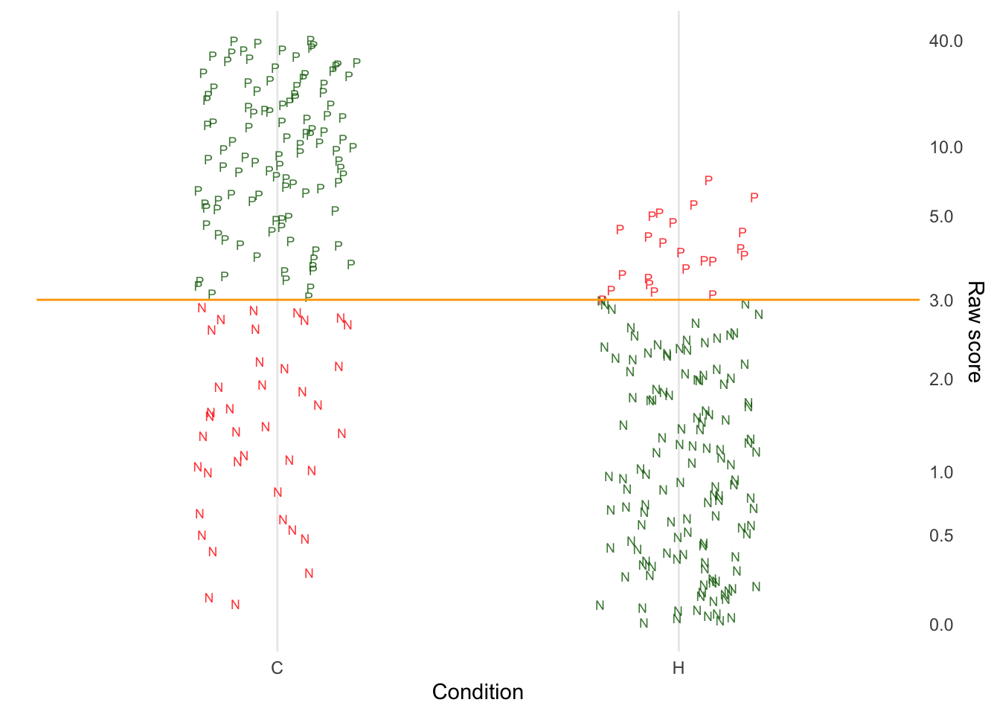
Moving the threshold up would reduce the number of false-positives. At the same time, the larger threshold would increase the number of false-negatives. Figure 28.8 shows what the situation would be if the threshold had been set at, say, 10 or 0.5.
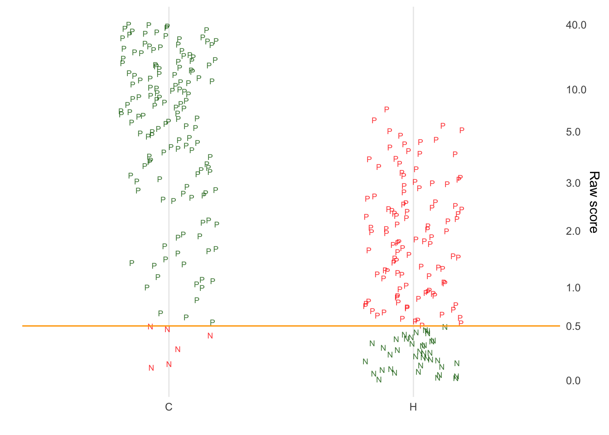
By setting the threshold larger, as in Figure 28.8(a), the number of false-negatives (red Ns) increases but the number of false-positives (red Ps) goes down. Setting the threshold lower, as in Figure 28.8(b), reduces the number of false-negatives but increases the number of false-positives.
This trade-off between the number of false-positives and the number of false-negatives is characteristic of classifiers.
Figure 28.9 shows the overall pattern for false results versus threshold. At a threshold of 0, all test results are \({\mathbb{P}}\). Hence, none of the C group results are false; if there are no \({\mathbb{N}}\) results, there cannot be any false-negatives. On the other hand, all of the H group are false-positives.
Increasing the threshold changes the results. At a threshold of 1, many of the H group—about 50%—are being correctly classified as \({\mathbb{N}}\). Unfortunately, the higher threshold introduces some negative results for the C group. So the fraction of correct results in the C group goes down to about 90%. This pattern continues: raising the threshold improves the fraction correct in the H group and lowers the fraction correct in the C group.
There are two names given to the fraction of correct classifications, depending on whether one is looking at the C group or the H group. The fraction correct in the C group is called the “sensitivity” of the test. The fraction correct in the H group is the “specificity” of the test.
The sensitivity and the specificity, taken together, summarize the error rates of the classifier. Note that there are two error rates: one for the C group and another for the H group. Figure 28.9 shows that, depending on the threshold used, the sensitivity and specificity can be different from one another.
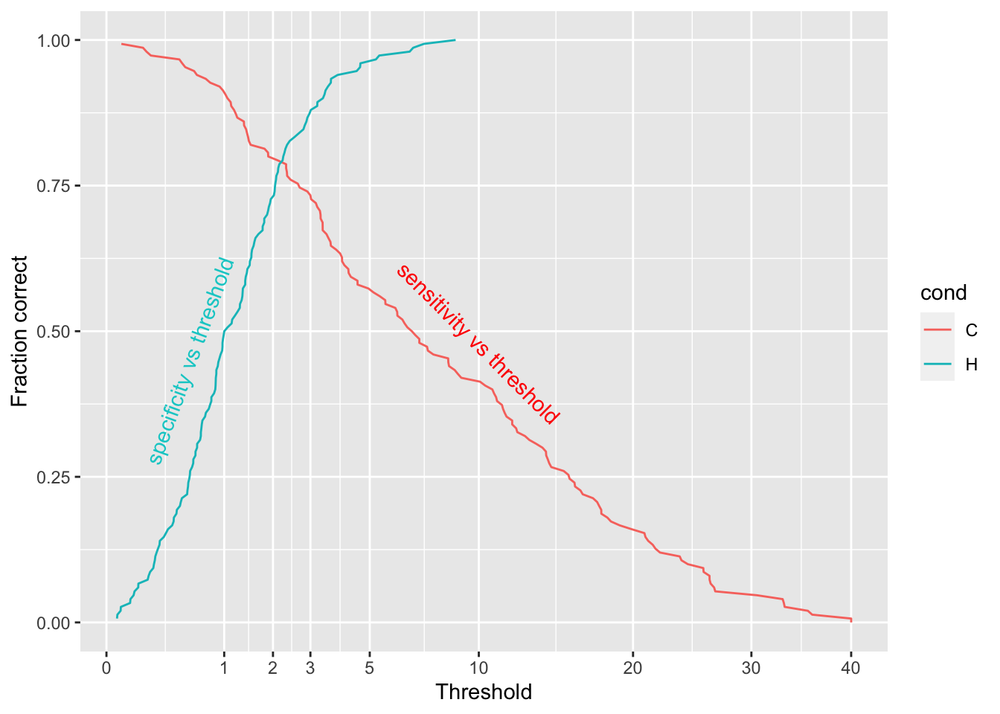
Ideally, both the sensitivity and specificity would be 100%. In practice, high sensitivity means lower specificity and vice versa.
Sensitivity and specificity will be particularly important when we take into consideration the prevalence, that is, the fraction of the population with condition C
The Loss Function
In order to set the threshold at an optimal level, it is important to measure the impact of the positive or negative test result. This impact of course will depend on whether the test is right or wrong about the person’s true condition. It is conventional to measure the impact as a “loss,” that is, the amount of harm that is done.
If the test result is right, there’s no loss. Of course, it’s not nice that a person is C, but a \(\mathbb{P}\) test result will steer our actions to treat the condition appropriately: no loss in that.
Typically, the loss stemming from a false negative is reckoned as more than the loss of a false positive. A false negative will lead to failure to treat the person for a condition that he or she actually has.
In contrast, a false-positive will lead to unnecessary treatment. This also is a loss that includes several components that would have been avoided if the test result had been right. The cost of the treatment itself is one part of the loss. The harm that a treatment might do is another part of the loss. And the anxiety that the person and his or her family go through is still another part of the loss. These losses are not necessarily small. The woman who gets a false positive breast-cancer diagnosis will suffer from the effects of chemotherapy and the loss of breast tissue. The man who gets a false-positive prostate-cancer diagnosis may end up with urinary incontinence and impotence.
The aim in setting the threshold is to minimize the total loss. This will be the loss incurred due to false negative times the number of false negatives plus the loss incurred from a false positive times the number of false positives.
Demonstration: Setting the optimal threshold
In Lesson 28, we saw that the threshold for transforming a raw test score into a \(\mathbb{P}\) or \(\mathbb{H}\) result determined the sensitivity and specificity of the test. (See Figure 28.9.) Of course, its best if both sensitivity and specificity are as high as possible, but there is a trade-off between the two: increasing sensitivity by lowering the threshold will decrease specificity. Likewise, raising the threshold will improve specificity but lower sensitivity.
The “loss function” provides a way to set an optimal value for the threshold. It is a function, because the loss depends on whether the test result is a false-positive or a false-negative.
Suppose that the
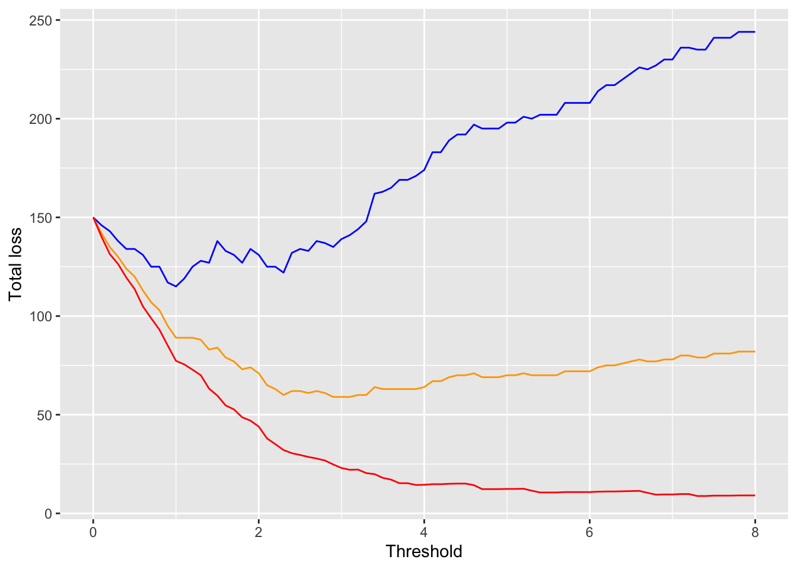
Diagnostic accuracy of digital versus film mammography: exploratory analysis of selected population subgroups in DMIST. Pisano ED, Hendrick RE, Yaffe MJ, et al. Radiology. 2008;246:376–383↩︎